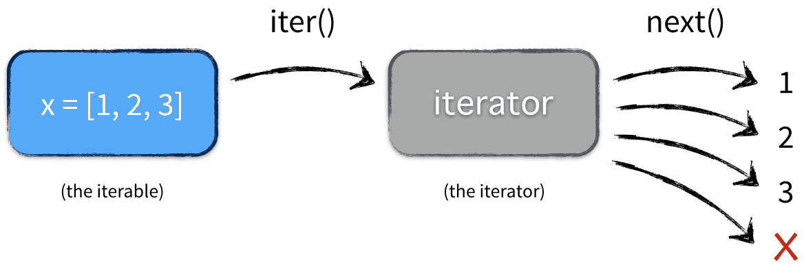

| Тема 4. Циклы Python. | ||
|
|
Назад | |
Цикл с условиемЦикл с условием представлен в Python оператором while.
Особенности:
Цикл с условием используется, когда количество итераций неизвестно, однако известно условие его окончания.
Пример использования цикла
Листинг 1 - Цикл
while в
Python |# Использование цикла с условием для охлаждения напитка
#
# Считаем, что напиток холодный при температуре <= 10
TEMP_COLD_MAX = 10
temp = 20
while temp > TEMP_COLD_MAX:
print("Кола при температуре {}°C - так себе! ".format(temp) +
"Кладу кусочек льда...")
temp -= 1
print("Отлично, при {}°C можно пить!".format(temp))
# -------------
# Пример вывода:
# Кола при температуре 20°C - так себе! Кладу кусочек льда...
# Кола при температуре 19°C - так себе! Кладу кусочек льда...
# Кола при температуре 18°C - так себе! Кладу кусочек льда...
# Кола при температуре 17°C - так себе! Кладу кусочек льда...
# Кола при температуре 16°C - так себе! Кладу кусочек льда...
# Кола при температуре 15°C - так себе! Кладу кусочек льда...
# Кола при температуре 14°C - так себе! Кладу кусочек льда...
# Кола при температуре 13°C - так себе! Кладу кусочек льда...
# Кола при температуре 12°C - так себе! Кладу кусочек льда...
# Кола при температуре 11°C - так себе! Кладу кусочек льда...
# Отлично, при 10°C можно пить!
Пример использования ключевого слова Примечание Бесконечный цикл
При составлении программы с циклом Совместный цикл (цикл по коллекциям)Совместный цикл представлен в Python циклом for.
Особенности:
Пример использования
Листинг 2 - Цикл
for в
Python
# 1. Простое перемещение по коллекции (списку)
#
# Выводим на экран наименование языка программирования из списка и его длину
langs = ['С++', 'Java', 'Python']
for lang in langs:
print(lang, len(lang))
print()
# 2. В Python в явном виде отсутствует привычный для Паскаля или Си
# цикл со счетчиком. Однако данный тип цикла может быть реализован как
# for ... in с перемещением по числовому диапазону range(...)
#
# Выводим на экран числа от 1 до 10
for i in range(10):
print(i + 1, end=" ")
# -------------
# Пример вывода:
# С++ 3
# Java 4
# Python 6
#
# 1 2 3 4 5 6 7 8 9 10
Пример использования ключевого слова Итераторы
Универсальность цикла Общая схема взаимодействия коллекции и итератора следующая:
 Рисунок 1 - Итератор и итерируемый объект 6
Итераторы, реализованные по-разному для различных
классов (например, для кортежа и словаря) позволяют
циклу
Листинг 3 - Пример явного использования
итератора для списка и словаря
# 1. Явное использование итератора для списка
>>> my_list = [1, 2, 3]
>>> it = my_list.__iter__()
>>> it
<list_iterator object at 0x000001E8E20BAB00>
>>> it.__next__()
1
>>> it.__next__()
2
>>> it.__next__()
3
>>> b.__next__()
Traceback (most recent call last):
File "<stdin>", line 1, in <module>
StopIteration
# 2. Явное использование итератора для словаря
>>> my_dict = dict(name="Саша", age=20, weight=65.6)
>>> it = my_dict.__iter__()
>>> it
<dict_keyiterator object at 0x000001E8E20B04F8>
>>> it.__next__()
'age'
>>> it.__next__()
'name'
>>>
>>> it.__next__()
'weight'
>>> it.__next__()
Traceback (most recent call last):
File "<stdin>", line 1, in <module>
StopIteration
Итерируемые объекты также поддерживаются рядом полезных функций.
Пример использования нескольких функций приведен в Листинге 4.
Листинг 4. - Функции для работы с
итерируемыми объектами
# Использование специальных функций для итерируемых объектов
>>> fruits = ["апельсины", "ябоки", "мандарины", ""]
>>> any(fruits)
True
>>> all(fruits) # False (пустая строка == False)
False
>>> list(reversed(fruits))
['', 'мандарины', 'ябоки', 'апельсины']
>>> list(enumerate(fruits, start=1))
[(1, 'апельсины'), (2, 'ябоки'), (3, 'мандарины'), (4, '')]
|
||
| Конспект подготовлен Бакулиным А. М. 2022 год. | ||